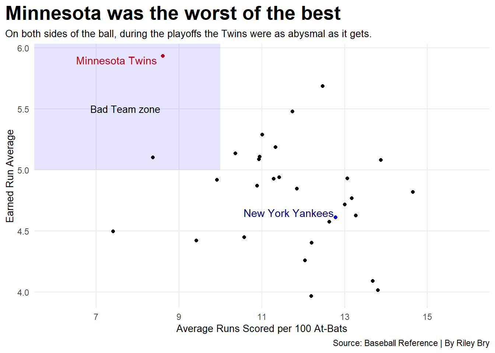
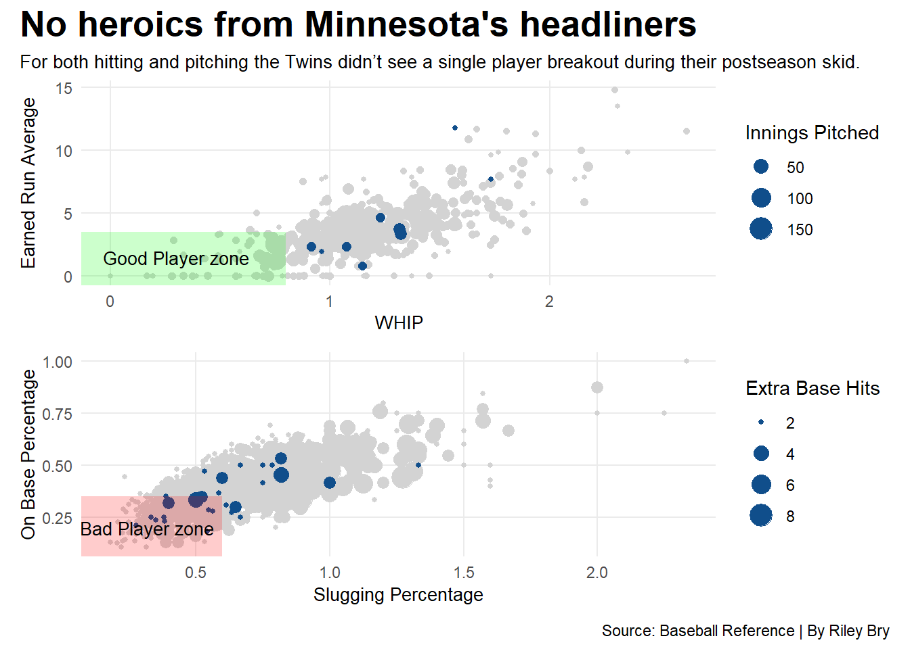

Sports live and die by the postseason. In each respective sport, there’s no denying the excitement that is produced from the best teams vying for one spot at the end of the road.
Along that journey to hoist championship hardware, there are performances from players and teams that give the word rarity meaning. Insert one of the greatest records in playoff history: The 18-game straight playoff losing streak of the Minnesota Twins.
The 19-year streak of playoff atrocities breaks the concept of reasonable chance and sheds a glimpse into the misfortune of Minnesota sports fans.
To showcase the statistical embarrassment of this feat, in 100,000 simulations, using the Twins’ regular season win percentage, not one simulation did the Minnesota Twins lose 18 straight games. Not one.
The drought started all the way back in 2004 when the Twins tasted their last lick of happiness, taking down the Yankees in game one, backed by a seven-inning shutout from Johan Santana.
What preceded this win was a collapse on numerous levels.
Code
library(tidyverse)library(ggrepel)library(patchwork)library(ggalt)library(ggtext)library(ggnewscale)playoffs_batters <-read_csv("mlb_postseason_batting_2000_2024.csv") |>mutate_at(2:29, as.numeric) |>mutate(team =case_when( team =="Cleveland Indians"~"Cleveland Guardians", team =="Florida Marlins"~"Miami Marlins", team =="Anaheim Angels"~"Los Angeles Angels of Anaheim",TRUE~ team ))playoffs_pitchers <-read_csv("mlb_postseason_pitching_2000_2024.csv") |>mutate_at(2:28, as.numeric) |>mutate(team =case_when( team =="Cleveland Indians"~"Cleveland Guardians", team =="Florida Marlins"~"Miami Marlins", team =="Anaheim Angels"~"Los Angeles Angels of Anaheim",TRUE~ team ))Twins_Roster <- playoffs_batters |>filter(team =="Minnesota Twins") |>group_by(name) |>mutate(xbh = x2b + x3b + hr ) |>filter(xbh >1, h >1)grouped_playoff_batters <- playoffs_batters |>group_by(team) |>summarise(runs_scored =sum(r, na.rm=TRUE),total_at_bats =sum(ab, na.rm=TRUE) ) |>mutate(runs_scored_per_game = (runs_scored/total_at_bats)*100)grouped_playoff_pitchers <- playoffs_pitchers |>group_by(team) |>summarize(runs_against =sum(r, na.rm=TRUE),total_innings =sum(ip, na.rm=TRUE) ) |>mutate(runs_allowed_per_game = (runs_against/total_innings)*10)hit_pitch_numbers <- grouped_playoff_batters |>inner_join(grouped_playoff_pitchers)MN_Twins <- hit_pitch_numbers |>filter(team =="Minnesota Twins")NY_Yankees <- hit_pitch_numbers |>filter(team =="New York Yankees")ggplot() +geom_point(data=hit_pitch_numbers, aes(x=runs_scored_per_game, y=runs_allowed_per_game)) +geom_point(data=MN_Twins, aes(x=runs_scored_per_game, y=runs_allowed_per_game), color ="red3") +geom_text(aes(x=7.5, y=5.9, label="Minnesota Twins"), color="red3") +geom_point(data=NY_Yankees, aes(x=runs_scored_per_game, y=runs_allowed_per_game), color="blue3") +geom_text(aes(x=11.65, y=4.65, label="New York Yankees"), color="navyblue") +scale_x_continuous(limits =c(6,16), breaks =c(7,9,11,13,15)) +annotate("rect", fill ="blue", alpha =0.1, xmin =-Inf, xmax =10,ymin =Inf, ymax =5)+geom_text(aes(x=7.7, y=5.5, label="Bad Team zone"), size=3.5) +labs(x="Average Runs Scored per 100 At-Bats", y="Earned Run Average", title="Minnesota was the worst of the best", subtitle="On both sides of the ball, during the playoffs the Twins were as abysmal as it gets.", caption="Source: Baseball Reference | By Riley Bry" ) +theme_minimal() +theme(plot.title =element_text(size =20, face ="bold"),axis.title =element_text(size =10), plot.subtitle =element_text(size=10), panel.grid.minor =element_blank(),plot.title.position ="plot" )

It’s pretty well understood that in baseball, to win games, you need to score more than the other team. During the Twins’ streak, they were in company of their own when compared to the other 30 teams during this 19-year span.
Over the 18 games, the Twins gave up almost six runs a game from the bump, ranking worst in the league. At the same time, they mustered up the third-worst run production.
However, the heartbreak goes deeper than an inability to score and prevent runs. For the Twins, it comes down to when the runs were scored. Over the 18 games, Minnesota was outscored in the seventh inning 23-1, leading to numerous instances of late-game torment that squelched the hope of ending the streak.
Adding insult to an already mutilated body, one of the only two innings in which the Twins in total outscored their opponents was the first inning of play. Meaning, to spell it out, the Twins found some of their most success in the first frame, and in turn, gluing Twins fans to their TV sets before brutally reminding them that they live in the land of 10,000 disappointments.
A major part in winning games in any sport, and specifically in postseason play, is the breakout performances from an organization’s stars. That’s where the issues start for the Twins. When the time came for their flagship players to will their team to a win, they disappeared. Any consistency seen from the Minnesota staples, including José Berríos, Nelson Cruz, and Joe Nathan, vanished when October hit.
Code
grouped_players <- playoffs_batters |>group_by(name, team) |>mutate(xbh = x2b + x3b + hr ) |>filter(xbh >1, h >1) |>filter(name !="Totals") |>mutate(name=gsub("#", "", name)) |>mutate(name=gsub("\\*", "", name))avg_players <- grouped_players |>summarise(total_h =sum(h),total_bb =sum(bb),total_ab =sum(ab) )total_grouped_players <- avg_players |>mutate(total_obp=(total_h+total_bb)/total_ab )twins_hitters <- grouped_players |>filter(team =="Minnesota Twins")grouped_pitchers <- playoffs_pitchers |>group_by(name, team) |>filter(ip >5) |>filter(name !="Totals") |>mutate(name=gsub("#", "", name)) |>mutate(name=gsub("\\*", "", name))avg_pitchers <- grouped_pitchers |>summarise(total_e_runs =sum(er),total_walks =sum(bb),total_hits =sum(h),total_ip =sum(ip) )total_grouped_pitchers <- avg_pitchers |>mutate(total_whip=(total_hits+total_walks)/total_ip,total_era=(total_e_runs/total_ip)*10 )twins_pitchers <- total_grouped_pitchers |>filter(team =="Minnesota Twins")plot2 <-ggplot() +geom_point(data=grouped_players, aes(x=slg, y=obp, size=xbh), color="lightgrey") +geom_point(data=twins_hitters, aes(x=slg, y=obp, size=xbh), color="dodgerblue4") +scale_size_continuous(name="Extra Base Hits") +annotate("rect", fill ="red", alpha =0.2, xmin =-Inf, xmax = .6,ymin =-Inf, ymax = .35)+geom_text(aes(x=.32, y=.2, label="Bad Player zone"), size=3.5) +labs(x="Slugging Percentage", y="On Base Percentage", ) +theme_minimal()plot1 <-ggplot() +geom_point(data=total_grouped_pitchers, aes(x=total_whip, y=total_era, size=total_ip), color="lightgrey") +geom_point(data=twins_pitchers, aes(x=total_whip, y=total_era, size=total_ip), color="dodgerblue4") +scale_size_continuous(name="Innings Pitched") +annotate("rect", fill ="green", alpha =0.2, xmin =-Inf, xmax = .8,ymin =-Inf, ymax =3.5)+geom_text(aes(x=.3, y=1.5, label="Good Player zone"), size=3.5) +labs(x="WHIP", y="Earned Run Average", ) +theme_minimal()plot1 / plot2 +plot_annotation(title="No heroics from Minnesota's headliners", subtitle ="For both hitting and pitching the Twins didn't see a single player breakout during their postseason skid.", caption="Source: Baseball Reference | By Riley Bry" ) &theme(plot.title =element_text(size =20, face ="bold"),axis.title =element_text(size =10), plot.subtitle =element_textbox_simple(size=10), panel.grid.minor =element_blank(),plot.title.position ="plot" )

But then a savior arrived. A man who parted the waters of mediocrity in the state of Minnesota. That man was Royce Lewis. Hitting two rockets into the sea of Minnesota nice at Target Field, breaking the curse and ending the streak.
But the infamous streak still rests forever in the book of baseball history, serving as a reminder to the state of Minnesota that happiness is fake and success only comes to the rich.